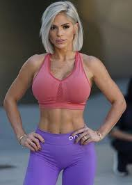
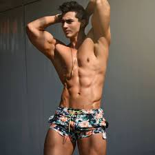

| Entrenador | Biografia |
|---|---|
|

Michelle Lewin |
Hailing from Venzuela, the 31-year-old bodybuilder has raked in as much as $10,000 per Instagram post thanks to partnerships with health and workout brands. (She has 14m followers across two accounts.) Lewin now has her own line of supplements and a range of home-workout equipment, and can't even take on new collaborations. "I am too busy with my own brands, and I have just started," she said. |
|

Rodrigo Romeh |
Rodrigo Romeh nació un 6 de agosto de 1989 en México. Actualmente, está radicado en California, Estados Unidos. Su pasión por los ejercicios llegó cuando tenía aproximadamente 16 años de edad. De pequeño se sentía inseguro de su cuerpo por tener unos kilos de más, lo que le llevó a querer perder peso pero, reconoce que sus inicios no fueron del todo acertados dado que se sometía a dietas extremas, reseña el portal Laletrade.com Conforme pasó el tiempo, Rodrigo entendió cómo debía entrenar y cuán importante era tener una dieta saludable, adaptada al objetivo que se trazó, “convertirse en atleta del culturismo”. |